A importância dos eventos de conscientização sobre o consumo de água
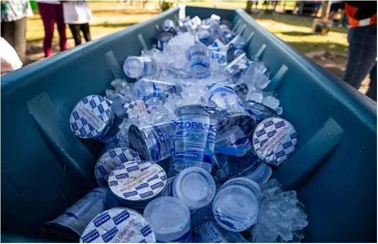
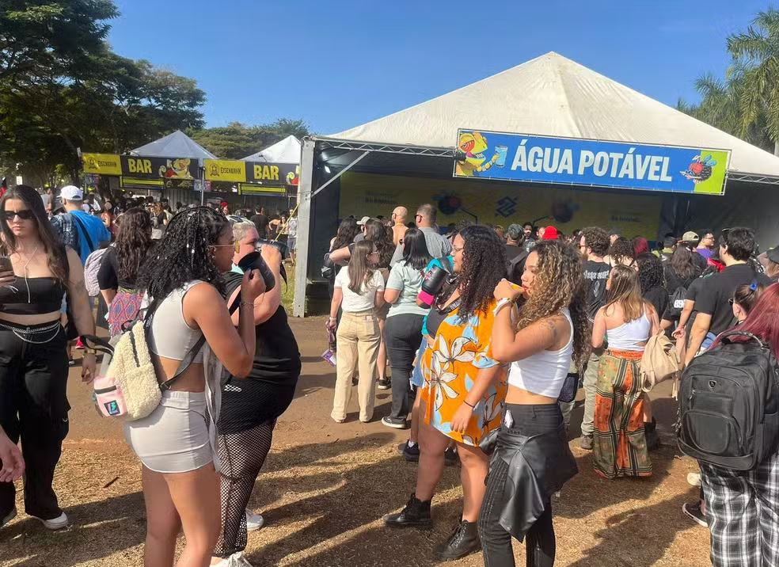
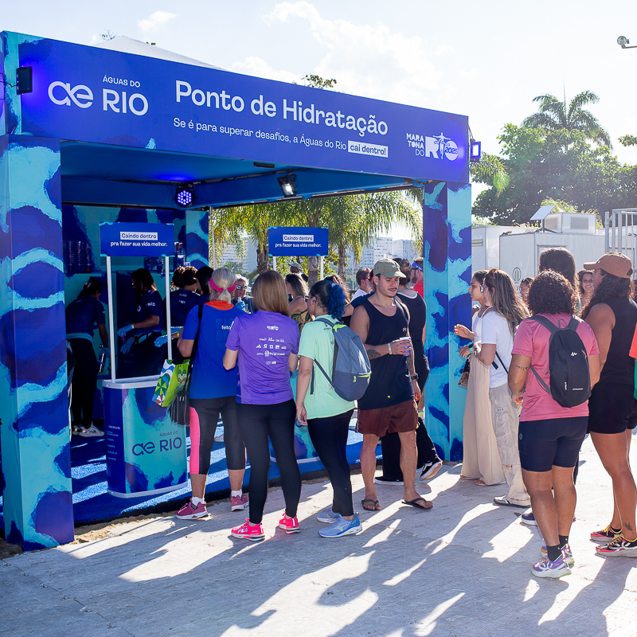
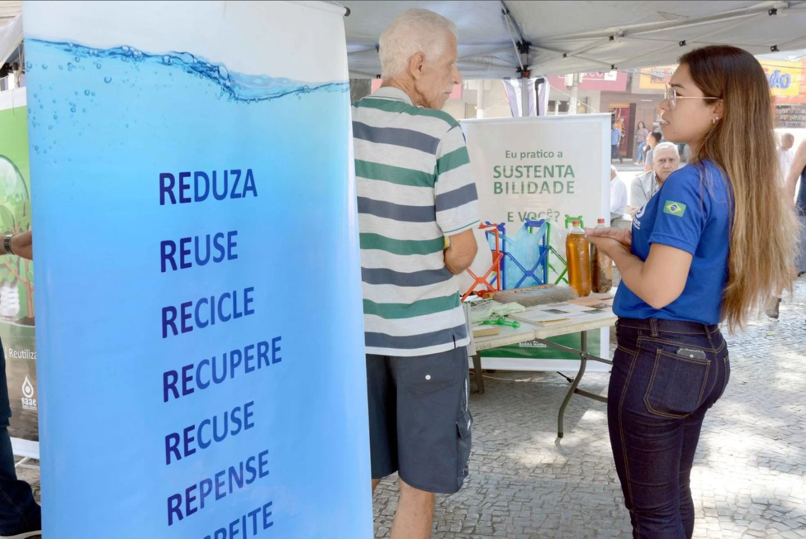
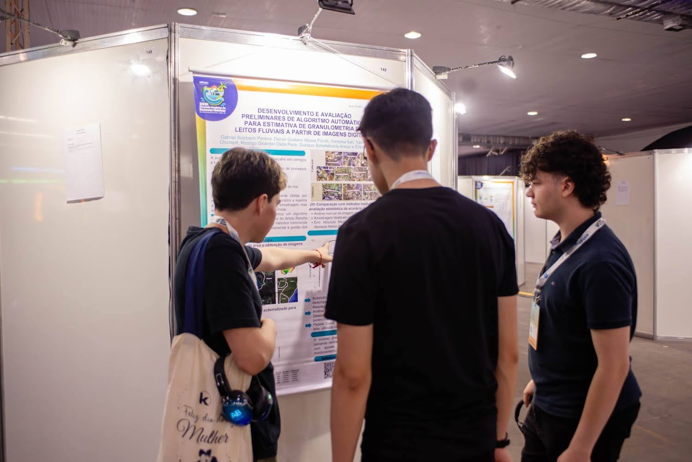
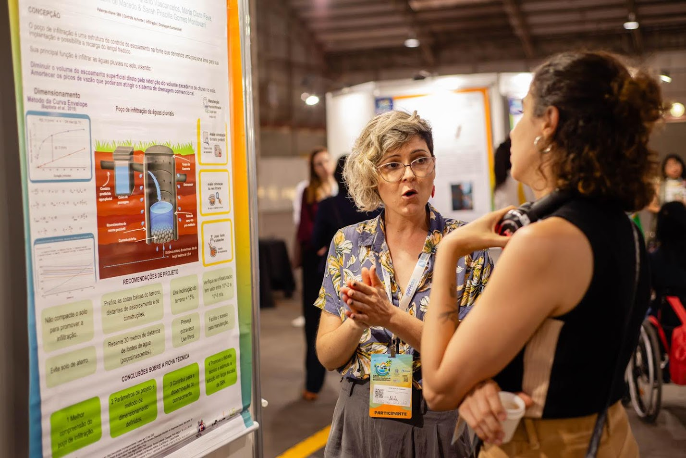
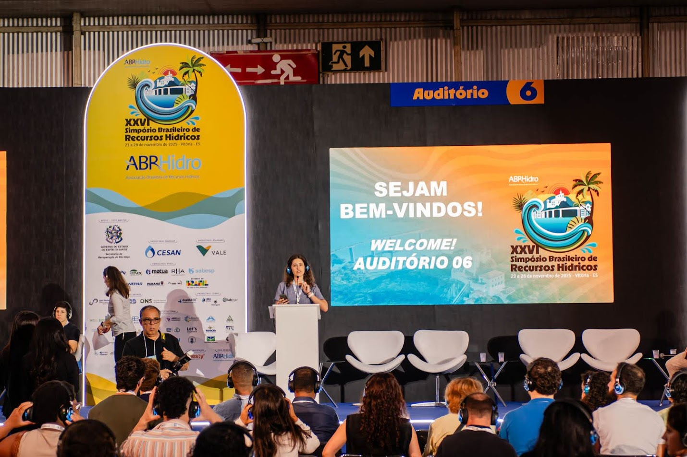
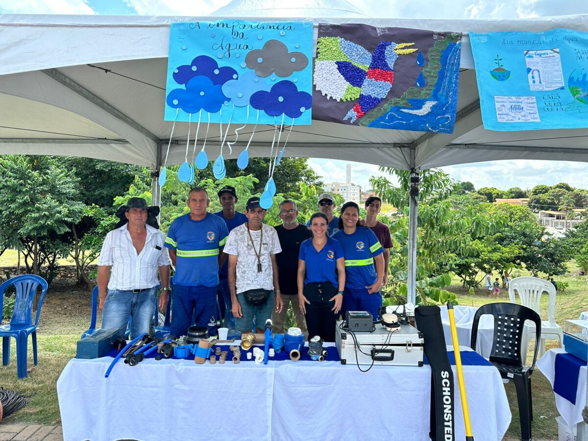
 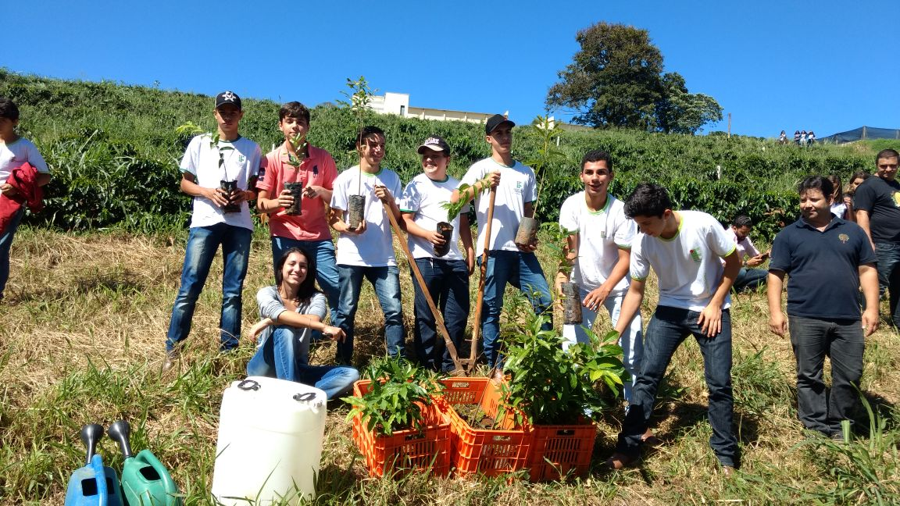
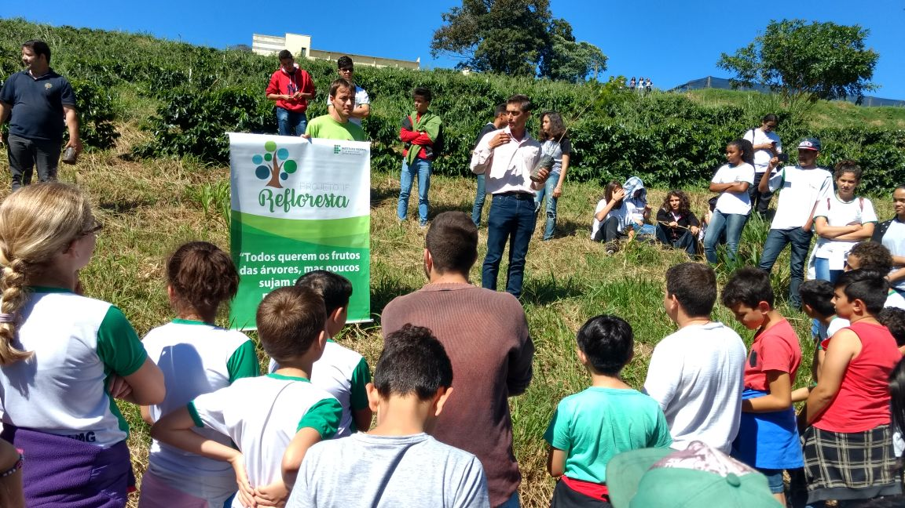
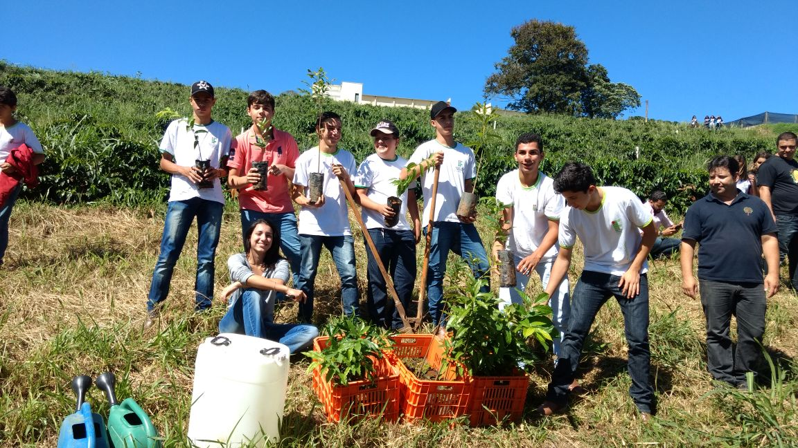
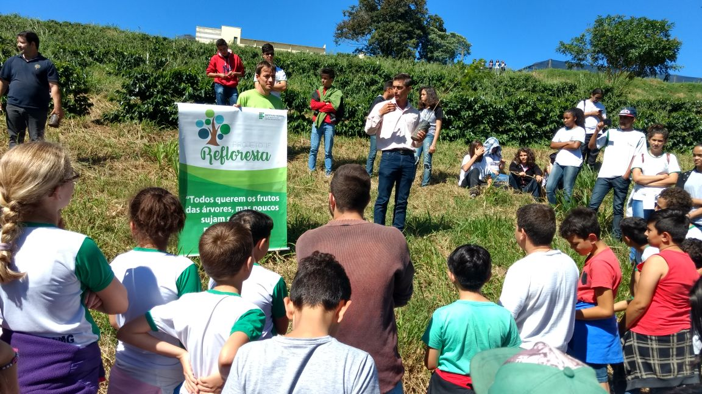
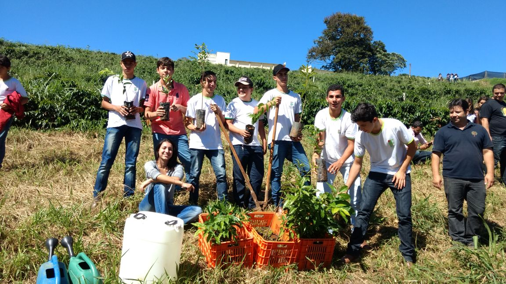
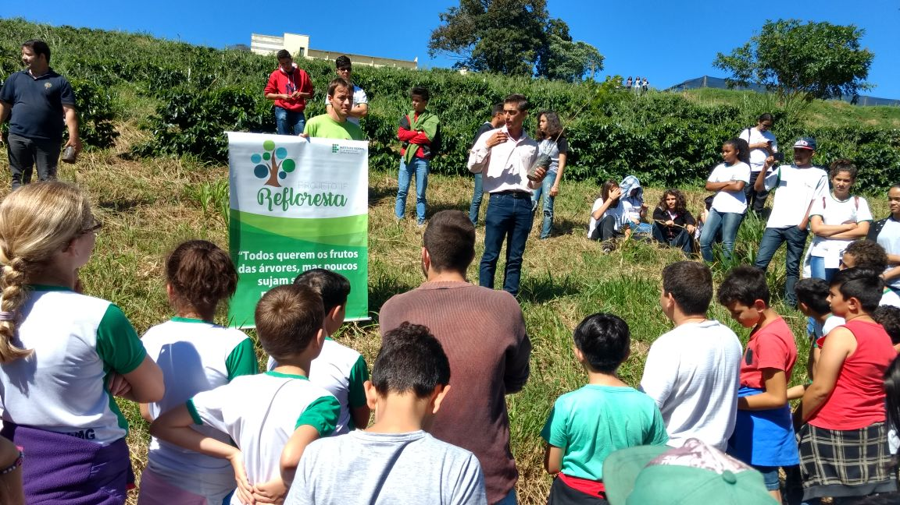
O Dia Mundial da Água, celebrado em 22 de março de cada ano desde 1993, é uma data comemorativa anual das Nações Unidas que destaca a importância da água doce. A data celebra a água e conscientiza sobre os 2,1 bilhões de pessoas que vivem sem acesso à água potável. Trata-se de uma iniciativa para combater a crise global da água.
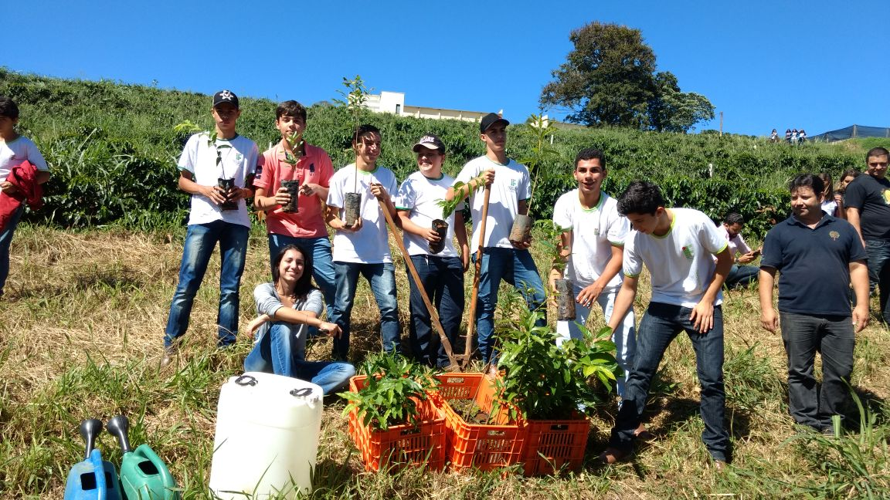
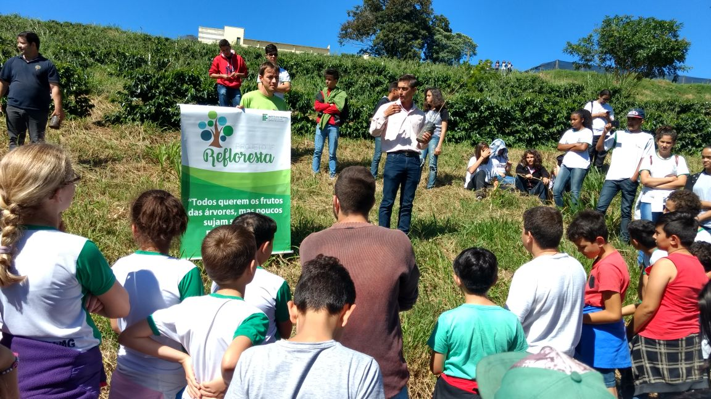